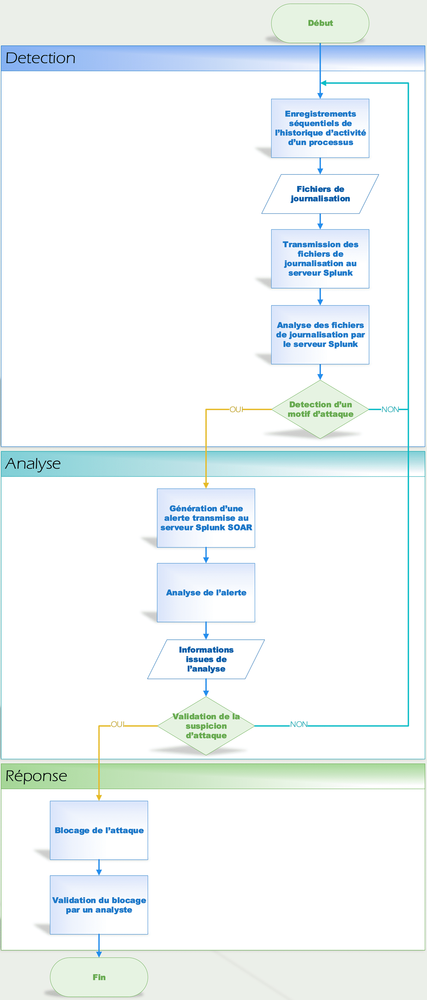

Solution de surveillance
Afin de renforcer la sécurité de l’architecture réseau que nous
avons déployée, nous avons mis en place une solution de
surveillance afin de détecter les tentatives d’attaque sur le
système d’information et les contrer. Cette solution a pour
objectif de nous permettre de surveiller les systèmes sensibles,
c’est-à-dire l’ensemble des systèmes contenant des données
confidentielles (le serveur de données du réseau local) et des
systèmes accessibles depuis internet (le pare-feu et les serveurs
situés dans la DMZ).
La technique de détection d’attaques que nous avons mise en place
se base sur l’analyse des fichiers de journalisation produits par
les différents systèmes sensibles déployés dans notre
infrastructure. Un fichier de journalisation (également appelé
log) est un fichier contenant les enregistrements séquentiels de
tous les événements affectant un processus particulier. Dans le
cas d’un serveur web, de tels fichiers permettent par exemple
d’enregistrer l’ensemble des connexions et des requêtes faites par
les utilisateurs auprès du serveur. De nombreuses attaques
laissent des traces dans les fichiers de journalisation produits
par les systèmes ciblés. Par exemple, la présence du motif «
${jndi: » dans un fichier de journalisation est spécifique
d’une tentative d’exploitation de la vulnérabilité Apache log4j.
Pour mettre en place la solution de détection d’attaques exposée
plus tôt, nous avons décidé d’utiliser les solutions développées
par l’entreprise Splunk en déployant au sein de notre architecture
un serveur Splunk et un serveur Splunk SOAR dont les rôles sont
les suivants :
- Le serveur Splunk centralise et analyse en temps réel l’ensemble
des fichiers de journalisation des systèmes sensibles afin de
détecter des motifs connus d’attaques. Lorsqu’une suspicion
d’attaque est détectée, une alerte contenant l’ensemble des
informations sur l’attaque présentes dans les fichiers de
journalisation est produite et est transmise au serveur splunk
SOAR.
- Le serveur Splunk SOAR, quant à lui, a pour rôle d’orchestrer et
d’automatiser les étapes d’analyse d’attaque et de réponse à
incident. Il permet d’enrichir automatiquement la base
d’informations disponibles sur l’alerte levée. Ces données sont
alors utilisées afin de déterminer si l’alerte correspond bien à
une tentative d’attaque et le cas échéant de qualifier son niveau
de dangerosité. La solution Splunk SOAR permet également
d’automatiser la réponse à incident afin de bloquer l’attaque.
Voici le workflow du processus de protection du réseau que nous
avons déployé :

En réalité, l’ensemble du réseau et des serveurs qui y sont
connectés sont virtualisés. Pour cela, nous avons utilisé la
solution de virtualisation proxmox que nous avons déployée sur une
machine Intel NUC.
Dans ce flux opérationnel, on peut remarquer la présence de trois
grandes phases :
​
- Le serveur Splunk centralise et analyse en temps réel l’ensemble
des fichiers de journalisation des systèmes sensibles afin de
détecter des motifs connus d’attaques. Lorsqu’une suspicion
d’attaque est détectée, une alerte contenant l’ensemble des
informations sur l’attaque présentes dans les fichiers de
journalisation est produite et est transmise au serveur splunk
SOAR.
- La première étape correspond au processus de surveillance de
l’activité du réseau afin de détecter les tentatives d’attaque.
Dans notre modèle, nous avons décidé de mettre en place une
détection d’attaque par analyse des fichiers de journalisation
produits par les différents processus que l’on souhaite surveiller
(tels que le pare-feu, les serveurs et autres services sensibles).
Pour cela, les journaux produits par ces services sont transférés
automatiquement et en temps réel au serveur Splunk de notre
infrastructure où ils sont centralisés et analysés. Il est alors
possible de paramétrer les motifs correspondant à des attaques
connues afin que ces derniers puissent être recherchés par Splunk
et que leur présence dans un fichier de journalisation lève une
alerte transmise au serveur Splunk SOAR.
- La phase suivante correspond à l’analyse de l’alerte générée par
le serveur Splunk dès lors qu’un motif suspect a été détecté.
L’objectif de cette étape est d’enrichir au maximum la base de
données disponible sur l’attaque. Pour cela, de nombreux outils
sont disponibles depuis Splunk SOAR et permettent d’analyser
l’alerte à partir des informations extraites des fichiers de
journalisation. Par exemple, à partir d’un nom de domaine, il est
possible de connaitre l’adresse IP de l’attaquant, sa position
géographique ou encore une estimation de son niveau de confiance.
Toutes les informations récupérées au cours de la phase d’analyse
permettent alors de confirmer que l’alerte ne correspond pas à un
faux positif et de qualifier le niveau de dangerosité de
l’attaque.
Les deux étapes précédentes sont généralement réalisées au sein
des entreprises par l’équipe SOC dont le rôle est de surveiller
l’infrastructure réseau et d’analyser les alertes générées par les
systèmes de surveillance de l’activité réseau.
-
La dernière étape correspond à la réponse à incident. Durant cette
phase, des actions sont mises en place afin de bloquer l’attaque
et de limiter ses impacts sur le système d’information.
Contrairement à l’étape d’analyse, la réponse à incident n’est pas
entièrement automatisée dans la mesure où elle nécessite
l’intervention d’un analyste afin de valider les actions de
défense mises en place. Cette intervention permet en particulier
de lever un blocage en cas de faux positif afin de ne pas bloquer
les processus métier qui pourraient être impactés.
Cette dernière étape est généralement assurée par l’équipe SOC en
cas de faible dangerosité ou en collaboration avec l’équipe CERT
(chargée de la réponse à incident) dans le cadre d’une attaque de
plus grande ampleur.
L’association des solutions Splunk et Splunk SOAR dans notre
infrastructure nous permet d’automatiser entièrement les processus
de détection, d’analyse et de blocage d’une attaque connue grâce à
la mise en place de playbook définissant toutes les étapes
d’analyse de l’alerte et de réponse à incident qui doivent être
mise en œuvre en fonction du type d’attaque détectée. Par ailleurs
ces solutions nous permettent de garder le contrôle sur les
actions de blocage d’attaque mises en œuvre en offrant la
possibilité de faire valider ces actions par un analyste.
Le processus de défense du réseau que nous avons déployé est ainsi
entièrement automatisé et permet de protéger les systèmes
sensibles contre les attaques connues. Cependant, la méthode de
détection d’attaques que nous utilisons possède plusieurs limites.
En effet, cette solution ne permet pas de détecter des attaques
utilisant des vulnérabilités de type 0-day pour lesquels on ne
connait pas encore de motif permettant leur détection dans les
fichiers de journalisation.
Par ailleurs, certaines méthodes d’obscurcissement utilisées par
les attaquants génèrent des motifs qui ne sont pas spécifiques à
une attaque et qui peuvent alors provoquer des faux positifs. Il
est ainsi important de faire valider les actions de réponse à
incident par un analyste afin de ne pas bloquer un métier en cas
de faux positif en provenance d’un système métier.